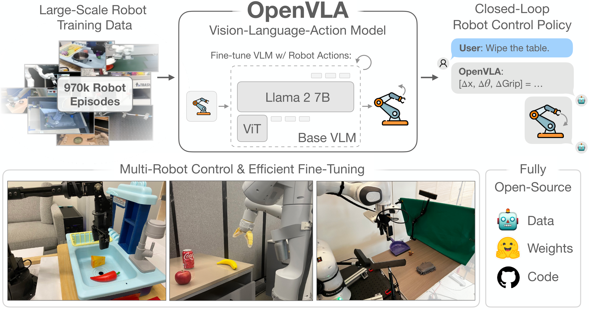
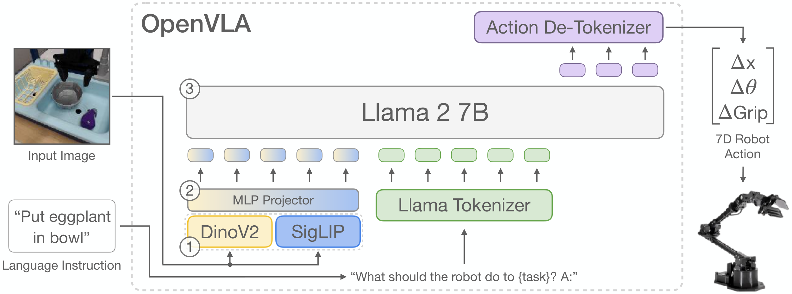
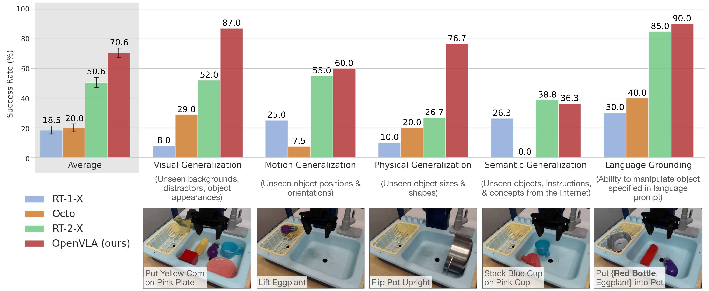
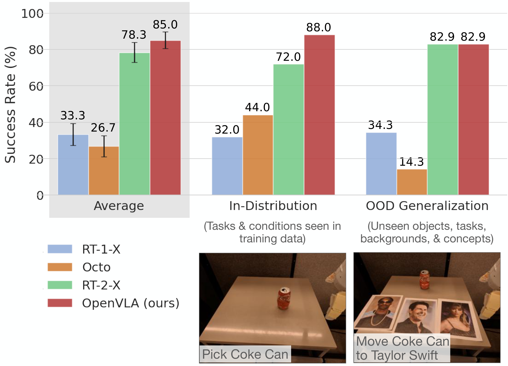
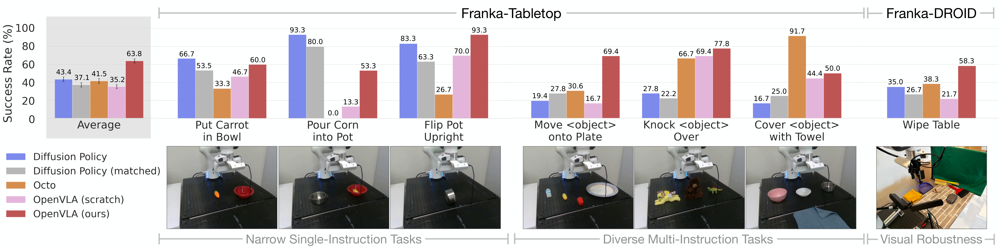
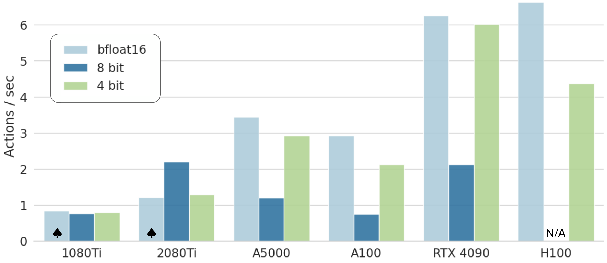

D5. OpenVLA: An Open-Source Vision-Language-Action Model¶
0. 읽기 전 약어 및 핵심 용어¶
이 문서를 읽기 전에 아래 약어와 용어를 먼저 정리한다. 이후 본문에서는 괄호 안의 약어를 사용한다.
- Artificial Intelligence (AI): 사람의 지각, 추론, 학습, 의사결정 능력을 기계가 수행하도록 만드는 인공지능 분야를 뜻한다.
- Application Programming Interface (API): 소프트웨어 모듈이나 robot primitive를 외부에서 호출하기 위한 함수/규약 interface이다.
- Large Language Model (LLM): 대규모 텍스트 데이터로 학습되어 언어 이해, 생성, 추론, 계획에 쓰이는 foundation model이다.
- Vision-Language Model (VLM): 이미지와 텍스트를 함께 입력받아 시각-언어 이해나 생성 작업을 수행하는 모델이다.
- Vision-Language-Action (VLA): 시각 관측과 언어 명령을 함께 받아 로봇 action까지 생성하는 모델 또는 학습 패러다임이다.
- Multi-Layer Perceptron (MLP): fully connected layer를 여러 층 쌓은 feed-forward neural network이다.
- Robotics Transformer (RT): robot observation을 입력받아 action을 예측하는 transformer 기반 robot policy 계열을 뜻한다.
- Robotics Transformer 1 (RT-1): Google의 실제 로봇 demonstration data로 학습한 transformer 기반 robot control policy이다.
- Robotics Transformer 2 (RT-2): web-scale vision-language knowledge와 robot trajectory를 함께 학습해 action token을 생성하는 VLA 모델이다.
- Robotics Transformer-X model family (RT-X): Open X-Embodiment 데이터 위에서 여러 robot embodiment로 확장한 RT 계열 policy family를 뜻한다.
- Robotics Transformer 1-X (RT-1-X): Open X-Embodiment 데이터로 확장 학습한 RT-1 계열 cross-embodiment policy이다.
- Robotics Transformer 2-X (RT-2-X): Open X-Embodiment 데이터로 확장 학습한 RT-2 계열 cross-embodiment VLA policy이다.
- Distributed Robot Interaction Dataset (DROID): 여러 장소에서 수집한 in-the-wild robot manipulation demonstration dataset이다.
- A Low-cost Open-source Hardware System for Bimanual Teleoperation (ALOHA): 저비용 양팔 teleoperation hardware와 imitation learning setup을 뜻한다.
- Physical Intelligence pi-zero model (pi0): Physical Intelligence가 제안한 general robot control용 vision-language-action flow model이다.
- Physical Intelligence pi-zero-point-five model (pi0.5): pi0를 open-world household manipulation으로 확장한 VLA model이다.
- Graphics Processing Unit (GPU): 대규모 neural network 학습과 병렬 연산을 빠르게 수행하는 processor이다.
- Video Random Access Memory (VRAM): GPU가 tensor, model parameter, activation을 저장하는 전용 memory이다.
- Toyota Research Institute (TRI): Toyota의 AI, robotics, mobility 연구기관이다.
- Physical Artificial Intelligence (Physical AI): 디지털 공간의 예측을 넘어 물리 세계에서 지각, 예측, 계획, 행동, 안전 검사를 수행하는 AI 시스템을 뜻한다.
1. Metadata¶
| Field | 내용 |
|---|---|
| ID | D5 |
| Title | OpenVLA: An Open-Source Vision-Language-Action Model |
| Authors | Moo Jin Kim, Karl Pertsch, Siddharth Karamcheti, Ted Xiao et al. |
| Affiliation / Team | Stanford / UC Berkeley / TRI / Google DeepMind / Physical Intelligence / MIT |
| Venue / Status | CoRL / arXiv |
| Date | 2024-06-13 |
| Link | https://arxiv.org/abs/2406.09246 |
| Local source | paper_corpus/sources/D5 |
| Source figures | paper_corpus/figures_source/D5/manifest.md |
2. 핵심 요약¶
OpenVLA는 7B parameter open-source Vision-Language-Action model이다. Open X-Embodiment에서 curated한 970K real-world robot episodes로 Prismatic-7B VLM을 robot action prediction에 fine-tuning하여, image observation과 language instruction을 입력받고 7-dimensional robot control action을 token sequence로 출력한다.
RT-2/RT-2-X가 VLA 패러다임을 강하게 보여줬지만 closed model이었다면, OpenVLA는 VLA를 공개 checkpoint, PyTorch training code, fine-tuning notebook, HuggingFace workflow까지 포함한 open ecosystem으로 만든 것이 핵심 기여다.
3. 왜 중요한가?¶
OpenVLA는 Physical AI에서 연구자들이 직접 실험 가능한 open-source VLA의 대표 출발점이다.
- 7B parameter open-source VLA로, closed RT-2-X 55B보다 훨씬 작다.
- Open X-Embodiment 기반 970K robot episodes로 학습했다.
- DINOv2 + SigLIP fused vision encoder와 Llama 2 backbone을 사용한다.
- WidowX와 Google Robot 평가에서 RT-2-X, RT-1-X, Octo와 비교해 강한 generalist manipulation 성능을 보였다.
- LoRA fine-tuning과 4-bit quantization을 통해 VLA를 더 접근 가능한 형태로 배포하는 방법을 제시했다.
- 이후 SpatialVLA, CogACT, pi0 계열 등 open VLA 연구의 중요한 baseline이 된다.
4. 전체 개념¶
OpenVLA는 “VLM을 robot action generator로 fine-tuning한다”는 RT-2의 아이디어를 open-source로 구현한다. image와 instruction을 넣으면, LLM vocabulary 안의 action token을 autoregressive하게 생성하고, 이를 continuous robot control command로 변환한다.

Figure 1. OpenVLA는 Open X-Embodiment의 970K robot episodes로 학습된 7B open-source VLA다. 여러 robot을 out-of-the-box로 제어하고, 새로운 robot domain에 parameter-efficient fine-tuning으로 빠르게 적응할 수 있다. Source figure: openvla_teaser.pdf.
발표에서는 이 그림을 통해 다음을 강조하면 좋다.
- OpenVLA는 단순 논문 모델이 아니라 공개 checkpoint/code/fine-tuning workflow를 포함한 연구 platform이다.
- RT-2-X보다 작지만, curated data와 architecture choice로 strong generalist policy 성능을 보인다.
- 중요한 사용 시나리오는
out-of-the-box control과new robot/task fine-tuning두 가지다.
5. Model Architecture¶
OpenVLA는 Prismatic-7B VLM을 기반으로 한다. 구조는 세 부분으로 나뉜다.

Figure 2. OpenVLA architecture. image observation과 language instruction을 입력받아 7-dimensional robot control action을 예측한다. vision encoder는 DINOv2와 SigLIP feature를 결합하고, projector가 visual feature를 Llama 2 embedding space로 보낸다. Source figure: openvla_model.pdf.
| 구성 | 설명 |
|---|---|
| Vision encoder | DINOv2 + SigLIP pretrained feature를 channel-wise concatenation |
| Projector | visual feature를 LLM input embedding space로 mapping하는 2-layer MLP |
| LLM backbone | Llama 2 7B |
| Input | image observation + natural language instruction |
| Output | discretized robot action token sequence |
| Training data | Open X-Embodiment 기반 970K robot episodes |
OpenVLA가 DINOv2와 SigLIP을 함께 쓰는 이유는 semantic feature와 spatial feature를 모두 활용하기 위해서다. 논문은 DINOv2 feature가 robot control에 필요한 fine-grained spatial reasoning에 도움이 될 수 있다고 설명한다.
6. Action Tokenization¶
OpenVLA는 continuous robot action을 LLM이 생성할 수 있는 discrete action token으로 바꾼다. 각 action dimension을 256개 bin으로 discretize하고, Llama tokenizer vocabulary의 least-used 256 token을 action token으로 덮어쓴다.
| Notation | 의미 |
|---|---|
| \(a_{t,j}\) | timestep \(t\)에서 \(j\)번째 continuous robot action dimension |
| \(\tilde{a}_{t,j}\) | discretization 후 생성되는 action token index |
| \(\mathrm{bin}_{256}\) | 값을 256개 discrete bin 중 하나로 변환하는 함수 |
| \(q_{1,j}\) | training data에서 \(j\)번째 action dimension의 1st percentile quantile |
| \(q_{99,j}\) | training data에서 \(j\)번째 action dimension의 99th percentile quantile |
RT-2는 min-max bounds를 사용했지만, OpenVLA는 1st/99th quantile을 사용한다. 이는 outlier action 때문에 discretization interval이 과도하게 넓어져 action resolution이 낮아지는 문제를 줄이기 위한 선택이다.
7. Next-Token Action Prediction Objective¶
OpenVLA는 action prediction을 vision-language task처럼 다룬다. image observation과 instruction을 조건으로 action token sequence를 예측하고, action token에 대해서만 cross-entropy loss를 계산한다.
| Notation | 의미 |
|---|---|
| \(\mathcal{L}(\theta)\) | OpenVLA fine-tuning loss |
| \(\theta\) | OpenVLA model parameter |
| \(\mathcal{D}\) | curated OpenX robot demonstration dataset |
| \(o\) | image observation |
| \(l\) | natural language task instruction |
| \(a\) | continuous robot action |
| \(\tilde{a}_{j}\) | \(j\)번째 discretized action token |
| \(N\) | action dimension 수 |
| \(\tilde{a}_{<j}\) | 이전 action token context |
| \(p_{\theta}\) | observation과 instruction을 조건으로 action token을 생성하는 model distribution |
이 수식은 OpenVLA가 “robot policy를 language model의 token generation 문제로 바꾼다”는 점을 보여준다. RT-2와 같은 VLA 패러다임이지만, OpenVLA는 open backbone과 open training pipeline으로 이를 재현 가능하게 만든다.
8. Training Data와 Design Decisions¶
OpenVLA는 Open X-Embodiment를 그대로 모두 쓰지 않고, training에 적합하도록 curated mixture를 만든다.
| Design decision | 내용 |
|---|---|
| Dataset source | Open X-Embodiment |
| Final data size | 970K robot episodes |
| Filtering | manipulation dataset, 3rd-person camera, single-arm end-effector control 중심 |
| Mixture weighting | Octo의 data mixture weight를 기반으로 dataset balance 조정 |
| DROID | 초기에는 일부 포함했지만 action token accuracy 문제로 final third training에서 제거 |
| Image resolution | 224x224 사용. 384x384는 3배 느리지만 성능 차이가 없었다고 보고 |
| Vision encoder | frozen이 아니라 fine-tuning하는 것이 VLA 성능에 중요 |
| Training epochs | final run은 27 epochs |
| Training compute | 64 A100, 14일, batch size 2048 |
이 논문에서 실무적으로 중요한 포인트는 VLA training이 일반 VLM fine-tuning과 다르다는 점이다. vision encoder를 freeze하는 VLM 관행과 달리, OpenVLA는 robot control을 위해 vision encoder fine-tuning이 중요하다고 보고한다.
9. Direct Evaluation: Generalist Robot Control¶
OpenVLA는 WidowX BridgeData V2 환경과 Google Robot 환경에서 RT-1-X, RT-2-X, Octo와 비교된다.

Figure 3. BridgeData V2 WidowX evaluation. OpenVLA는 visual, motion, physical, language grounding 등 여러 generalization category에서 강한 성능을 보이며, semantic generalization을 제외하면 RT-2-X보다 높은 성능을 보인다. Source figure: bridge_results.pdf.

Figure 4. Google Robot evaluation. OpenVLA와 RT-2-X는 comparable performance를 보이며, RT-1-X와 Octo보다 전반적으로 높은 성능을 보인다. Source figure: rt1_results.pdf.
핵심 결과는 다음과 같다.
| 비교 | 해석 |
|---|---|
| OpenVLA vs RT-2-X | OpenVLA는 7B로 RT-2-X 55B보다 작지만 BridgeData V2에서는 더 강하고 Google Robot에서는 comparable |
| OpenVLA vs RT-1-X / Octo | Internet-pretrained VLM 기반 VLA가 scratch-trained transformer policy보다 generalization에 강함 |
| Semantic generalization | RT-2-X가 더 강한데, 이는 더 큰 Internet pretraining과 co-fine-tuning 때문으로 해석 |
| Language grounding | distractor가 있는 multi-object scene에서 correct object manipulation이 중요 |
논문은 OpenVLA가 RT-2-X보다 7배 적은 parameter로, 29개 task와 multiple embodiments에서 RT-2-X보다 16.5% absolute success rate가 높다고 보고한다.
10. Fine-Tuning to New Robot Setups¶
OpenVLA의 또 다른 핵심 기여는 VLA fine-tuning을 본격적으로 평가한 것이다. 새 Franka robot setup에서 10-150 demonstrations만으로 fine-tuning하고, Diffusion Policy, Octo와 비교한다.

Figure 5. New robot setup adaptation. OpenVLA는 7개 Franka task에서 fine-tuning되며, narrow single-instruction task에서는 Diffusion Policy가 강하지만, multi-instruction 및 distractor가 있는 diverse task에서는 generalist pretrained policy인 OpenVLA가 강하다. Source figure: finetune_results.pdf.
fine-tuning 실험의 핵심 해석은 다음과 같다.
- Diffusion Policy는 좁고 단일 instruction인 dexterous task에서 여전히 강하다.
- OpenVLA와 Octo는 multiple objects와 language grounding이 필요한 diverse task에서 더 강하다.
- OpenVLA는 전체 평균에서 가장 높은 성능을 보이며, 모든 tested task에서 최소 50% success rate를 넘긴 유일한 방법이라고 보고된다.
- OpenVLA scratch, 즉 OpenX pretraining 없이 base Prismatic VLM만 fine-tuning한 경우 성능이 낮아 OpenX robot pretraining의 효과가 드러난다.
11. Parameter-Efficient Fine-Tuning과 Quantization¶
OpenVLA는 full fine-tuning뿐 아니라 LoRA와 quantized inference도 평가한다. 이는 “VLA가 연구실/현장에서 실제로 쓰일 수 있는가?”와 직접 연결된다.
LoRA는 linear layer에 low-rank update를 추가하는 방식으로 이해할 수 있다.
| Notation | 의미 |
|---|---|
| \(W\) | pretrained model의 기존 weight matrix |
| \(W^{\prime}\) | fine-tuning 후 effective weight |
| \(\Delta W\) | LoRA가 추가하는 low-rank update |
| \(A,B\) | 학습되는 low-rank matrix |
| \(r\) | LoRA rank. 논문은 default \(r=32\)를 추천 |
논문에서 LoRA rank 32는 full fine-tuning과 유사한 성공률을 보이면서 전체 parameter의 1.4%만 학습한다. 이를 통해 single A100에서 10-15시간 안에 new task fine-tuning이 가능하다고 보고한다.

Figure 6. OpenVLA inference speed. bfloat16과 int4 quantization은 높은 throughput을 보이며, int4는 GPU memory footprint를 크게 줄이면서 Bridge task success를 유지한다. Source figure: inference_speed.pdf.
quantization 결과도 중요하다.
| Precision | Bridge Success | VRAM |
|---|---|---|
| bfloat16 | 71.3 ± 4.8% | 16.8 GB |
| int8 | 58.1 ± 5.1% | 10.2 GB |
| int4 | 71.9 ± 4.7% | 7.0 GB |
int8은 inference speed가 느려져 control dynamics가 바뀌며 성능이 떨어졌고, int4는 memory transfer 감소 덕분에 더 실용적인 trade-off를 보였다.
12. D1 Open X-Embodiment와의 연결¶
OpenVLA는 D1의 문제의식을 실제 open-source model로 이어받는다.
| D1 Open X-Embodiment | D5 OpenVLA |
|---|---|
| cross-embodiment data repository 구축 | curated OpenX mixture 970K episodes로 VLA 학습 |
| RT-1-X / RT-2-X로 positive transfer 입증 | 공개 VLA checkpoint/code/fine-tuning workflow 제공 |
| RT-2-X는 closed model | OpenVLA는 open-source 7B model |
| data scaling의 가능성 제시 | model adaptation과 accessibility까지 실험 |
| cross-embodiment learning infrastructure | downstream robot setup fine-tuning recipe |
즉, D1은 데이터와 RT-X 실험으로 field를 열었고, D5는 연구자들이 실제로 사용할 수 있는 open VLA baseline을 제공한다.
13. World Model 관점에서의 위치¶
OpenVLA는 명시적인 world model을 학습하지 않는다. future observation prediction, latent dynamics, planning rollout은 없다. 그러나 Physical AI와 World Model 스터디에서 중요한 이유는 다음과 같다.
| 관점 | OpenVLA의 의미 |
|---|---|
| action-as-language | robot action을 LLM token generation으로 다룬다. |
| pretrained visual-language prior | Internet-scale VLM의 semantic/spatial prior를 robot control로 transfer한다. |
| physical data scaling | OpenX robot demonstrations를 VLA fine-tuning data로 사용한다. |
| open-source baseline | VLA 연구를 closed API가 아니라 reproducible research 대상으로 만든다. |
| 한계 | environment dynamics를 내부 model로 예측하지 않고 reactive policy처럼 action을 생성한다. |
따라서 OpenVLA는 world model이라기보다, open-source VLA policy foundation이다. 하지만 이후 world-model-based VLA나 action planning model을 만들 때 비교 기준이 되는 중요한 baseline이다.
14. 한계¶
| 한계 | 의미 |
|---|---|
| single-image observation | multi-camera, wrist camera, proprioception, observation history를 기본적으로 지원하지 않는다. |
| inference throughput | high-frequency control setup, 예: ALOHA 50Hz에는 아직 느리다. |
| reliability | prior model보다 강하지만 tested task에서 항상 90% 이상 success를 보장하지는 않는다. |
| dexterous control | Diffusion Policy가 narrow dexterous task에서는 더 smooth/precise할 수 있다. |
| design questions 미해결 | base VLM size, co-training with web data, best visual features 등은 더 연구가 필요하다. |
| robot dynamics modeling 부재 | action chunking, temporal smoothing, dynamics-aware planning은 기본 구조에 포함되지 않는다. |
논문은 특히 action chunking이나 speculative decoding 등 inference-time optimization이 향후 중요하다고 논의한다.
15. 후속 연구와 연결¶
| 후속 흐름 | 연결 |
|---|---|
| SpatialVLA | OpenVLA의 spatial representation 한계를 보완하려는 흐름 |
| CogACT | VLA의 cognition/action module 분리와 action modeling 개선 |
| CoT-VLA | VLA에 visual reasoning과 chain-of-thought를 추가 |
| pi0 / pi0.5 | action token generation을 넘어 flow/diffusion-style continuous action generation으로 확장 |
| Octo | open-source generalist policy baseline, OpenVLA fine-tuning 비교 대상 |
| DROID / in-the-wild data | OpenVLA가 일부 시도했지만 충분히 흡수하지 못한 richer real-world data scaling 방향 |
16. 발표 구성 추천¶
문제의식: RT-2-X는 강하지만 closed이고, VLA fine-tuning practice가 부족했다.핵심 모델: DINOv2+SigLIP vision encoder, projector, Llama 2 7B backbone 구조를 설명한다.수식: action discretization과 next-token action prediction objective를 설명한다.데이터: OpenX curated 970K episodes와 design choices를 D1과 연결한다.평가: WidowX/Google Robot direct evaluation에서 RT-2-X, RT-1-X, Octo와 비교한다.fine-tuning: Franka setup에서 Diffusion Policy/Octo와 비교하고 어떤 task에서 강한지 설명한다.실용성: LoRA, quantization, inference speed를 통해 open VLA의 실제 사용 가능성을 논의한다.
17. 발표 질문¶
- OpenVLA가 RT-2-X보다 작으면서 강한 이유는 data curation, architecture, evaluation setup 중 무엇이 가장 클까?
- action을 LLM token으로 생성하는 방식은 continuous control에서 어떤 한계를 갖는가?
- OpenVLA는 Diffusion Policy보다 항상 나은가, 아니면 language grounding이 필요한 task에서 특히 강한가?
- VLA fine-tuning에서 vision encoder를 freeze하지 않는 것이 왜 중요한가?
- open-source VLA가 physical AI 연구 생태계에 주는 가장 큰 변화는 무엇인가?
18. 요약 코멘트¶
OpenVLA는 RT-2류 VLA를 공개 연구 생태계로 가져온 논문이다. D1 Open X-Embodiment가 cross-embodiment robot data foundation을 만들었다면, OpenVLA는 그 데이터를 사용해 실제로 배포/수정/ fine-tuning 가능한 7B VLA baseline을 제공한다. World model은 아니지만, 이후 Physical AI 연구에서 “open generalist VLA policy”의 기준점으로 읽어야 한다.